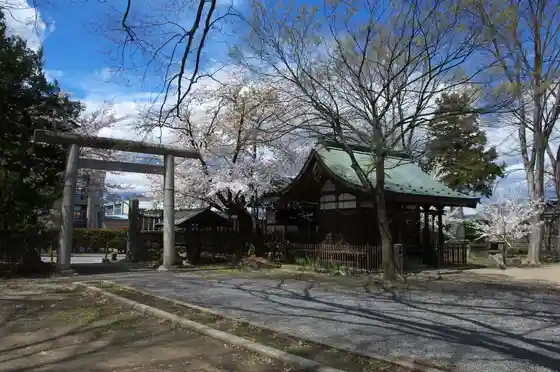
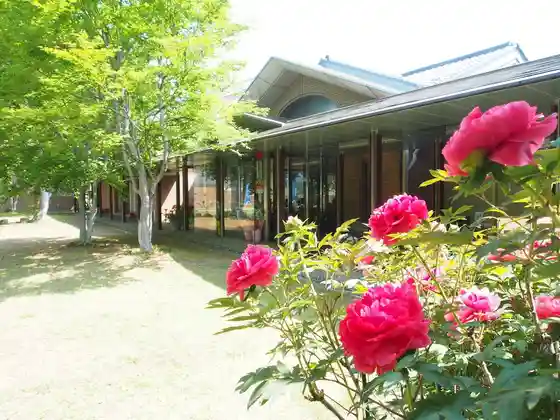
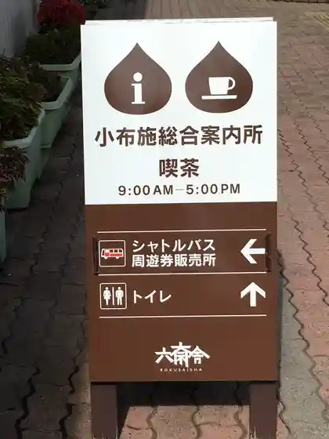

Shingonshu Toyoyama Ha Joko Tera
Obuse, Nagano · 026-247-3924 · Official / source link
Ko Dai Shrine
Obuse, Nagano · Official / source link

Obuse Museum Nakajima Chinami Kan
Obuse, Nagano · 026-247-6111 · Official / source link

Obuse Haiueioashisu Roadside Station Oashisu Obuse
Obuse, Nagano · 026-251-4111 · Official / source link
Obuse Sogo Information Center
Obuse, Nagano · 026-214-6300 · Official / source link

Chikufu Do Main Shop
Obuse, Nagano · 026-247-2569 · Official / source link
Orai /ourai
Obuse, Nagano · 026-213-7552 · Official / source link
Iwataro Sekiya Farm Chokubai Tokoro
Obuse, Nagano · 026-247-6670 · Official / source link
Obuse Ranch milgreen
Obuse, Nagano · 026-214-3224 · Official / source link
Shakaifukushi Hojin Kuri no Mi Sono
Obuse, Nagano · 026-247-6330 · Official / source link